{kind=link}
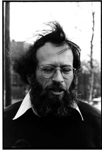
{kind=link}
I took four rolls of film of Alan Lelchuk for the jacket of his new book, Miriam at Thirty-Four. Neither of us could decide what kind of picture it should be. Should he be nonchalant -- shooting baskets in the playground across the street? Serious -- among the daffodils in the backyard? Congenial -- having tea at the kitchen table'! Resourceful -- talking to women who happen to be walking up Flagg Street? We tried everything. I made postcards of the best shots and sent them to him in Canaan, New Hampshire.
{kind=link}
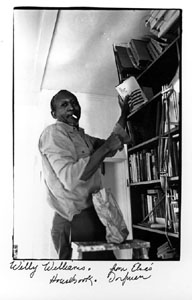
John Limon is one of those people you hear a lot about at Harvard, but
rarely come across. Someone who gets into Harvard because he's a mathematical
whiz and then goes on to graduate summa cum laude in English literature.
Someone who comes in as a shy and reclusive freshman and leaves with three
good friends and lots of acquaintances among students and faculty. Someone
who ignores the college literary scene and all the undergraduate publications
-- Advocate, Crimson, Independent, Lampoon -- and then has two finished
novels making the rounds of publishers in New York when he gets his diploma.
{kind=link}
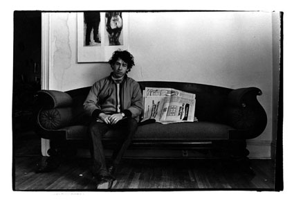
I met him during a year that he had taken off to finish his second novel, and hired him to help me sort negatives. I liked him right away -- though I said to myself, this is someone with a vicious eye for detail, God help me if he ever makes fun of me in anything he writes.
Most of my pictures of John are the last exposures on a roll of film of someone else. This would happen when he was working in my living room when I'd come home from a day of shooting. Let me finish this roll of film on you, I'd say.
John doesn't look like his picture of himself, although it's the best picture of him I have. Of course, he must have looked something like he looks here, at least for the instant of the exposure. But it's not the whole picture.
This confusion about what is/what appears to be, this ambiguity, is what attracts me to photography in general and to portrait photography in particular. Portrait photographs aren't the whole person, the real person. They are one mini-second, only as representative as any other mini-second would be. Because the camera gives us a tangible record of what just happened, that instant has an authority of its own. We can hold a piece of paper in our hand. We attribute reality to portrait photographs because they take off from the actual, have elements of what we call real. They are immediately recognizable. Portraits seem true, too, because we know the person had to have been there.in front of the lens for the image to register on the film (unlike a painting where the subject and painter can be on opposite sides of the globe). If John was there on the couch while I opened the camera shutter, that's his face, his jacket, how can I say he doesn't really look like the picture'?
It's that insistence on presence, the participation of the subject, that gives that misleading sense of definition to the portrait. We endow portrait photographs with all kinds of mystical/spiritual qualities. They seem so real and yet they're no more real than blatant fantasy. It's all resemblances, and it's all time. We are given this evidence of an instant when we all know time is a continuum. The photograph is an exquisite metaphor, a delicate haiku of memory.
{kind=link}
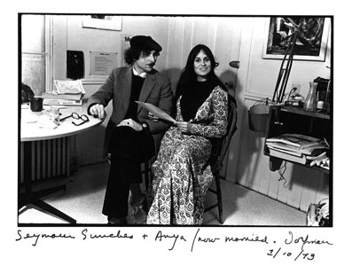
Seymour Simckes is a novelist and playwright; Anya an actress, a Canadian born in China. They are both very gentle people and I always love to see them. Seymour's father was a rabbi and it was he who arranged for me to take photographs in holy but deserted Blue Hill Avenue Orthodox synagogues. Since I'd grown up on Blue Hill Avenue, that meant a great deal to me.
{kind=link}
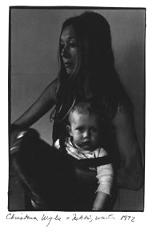
The picture of Christina is from winter 1971. Andy had gone to California and she was trying to manage Nicholas all by herself, as well as do some weaving, macrame, poems. It was an exhausting and sad time.
{kind=link}
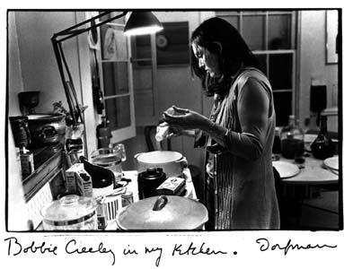
Bobbie Creeley is one of those people you never forget. I've known her as long as I've known Bob, since I was twenty-two. She's unlike anyone you'd ever meet growing up in Jewish Boston; she comes from west Texas and by the time she was eighteen, she knew she wanted to get out of there. And she did.
For a long time, I only knew that she was wise, direct, and very practical. She has this way of being able to zero in on a situation. When she's in the room, she's the person who's in charge. It may look like she's not paying attention, but just try something. She knows when it's time to leave, before the roof falls in, before you make a fool of yourself. She's the person who reads the map; who says, 'Let's go to another garage and see what they'll charge' [whereas Bob and I would stay where we were and pay]. There have been times in my life when I've heard her voice in my head, much more straight-to-the-point than my own, 'Don't you see -- he's trying to do a number on you?'
Once, a long time ago, during the Paterson Society days, 1960, 1961, Bobbie, Bob, and I and some friends were sitting around with a new Polaroid camera. We undid the box. Bob and I were already discouraged, not interested; we'd rather talk than fiddle with this thing that won't work anyhow. But Bobbie jumped right in; took the whole kit on her lap, read the directions; figured out how it worked. Took pictures. When I was twenty-two, I wanted to be just like her.
Bobbie has her own language; it's west Texas/California hipster -- circuitous sentences and winding ideas, use of particular words, and cadence. I can't reproduce it from memory, but you can hear it in her prose. About four years ago, she began to write short stories about her west Texas relatives and to publish them. Then she decided to use her own name, Bobbie Louise Hawkins. When she was here in April 1973, it was the first time she'd come to Cambridge by herself, without kids, without Bob.
{kind=link}
{kind=link}
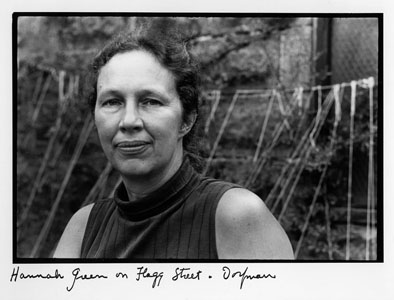
Summer 1972 Harvey and I went up to visit Hannah Green and John Wesley in Peterborough, New Hampshire. I took pictures of Hannah in front of the farmhouse, inside the barn, in an open field by the pond; they weren't spectacular. And we wanted one for the jacket of her book, The Dead of the House. So Hannah and John came to Cambridge and we tried some in my backyard. They worked.
When I had my show at Boston City Hall in October 1971, Hannah and John drove all the way down from Peterborough to see it. But unfortunately, three days before, Mayor Kevin White had made me take it down because he was having a banquet for big-city mayors in the gallery where it was hanging. He was trying to impress the mayors, especially Alioto and Lindsay, and the media who would cover The Event, and didn't want them 'to see all the sad faces in those depressing photographs.' When I got furious that he suddenly wanted the whole installation down after all that work, he said, 'You look cute when you're angry, my dear, but it's my city hall. If they were Rembrandts and I wanted them down, they'd come down.' When Hannah and John got there after that long drive, and it was a hot day, all they saw was a huge empty space. 'Elsa Dorfman? Never heard of her,' the guard told them.
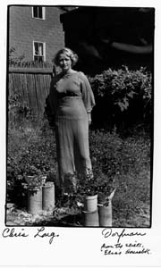
{kind=link}
I met Chris Long in Paragon Park in June 1969. She was there with a friend; I was there with Mark and Inger, taking pictures for a story we were doing together. I stopped Chris in front of the Swiss Boy Rotoride and asked her if I could take her picture. She thought I was crazy, but posed anyhow. She was wearing a bikini and drinking a Coke. I didn't write down her name.
Later, I put her picture in a display in the Cambridge Trust bank window. All her friends -- and even strangers -- told her that her picture was in the bank window. She didn't believe them. When she saw it, she called me and came right over to get prints. As soon as I heard she collected antique dresses, I said, 'Let's take pictures again.'
{kind=link}
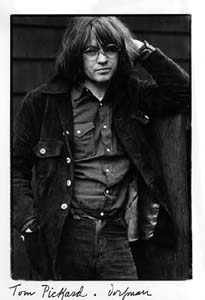
Tom Pickard, his wife Connie, and their two children came to visit Andy and Christina Wylie in February 1971 and stayed the whole month. Tom needed a picture for his book Guttersnipe, that Ferlinghetti was publishing, so the very day he arrived I took his picture. It was a good thing, too, because it was the only picture I took of him the whole time he was here.
{kind=link}
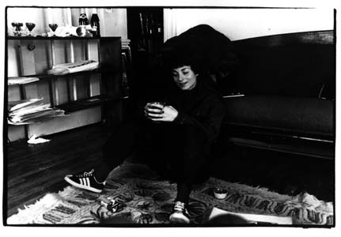
Harriet Rosenstein is the first biographer I have known. She is writing a book about Sylvia Plath. I love to hear how her work is going -- reconstructing events, looking at snapshots, interviewing people, hearing their accurate and/or exaggerated recollections. So we talk about Plath and have a diet lunch.
{kind=link}
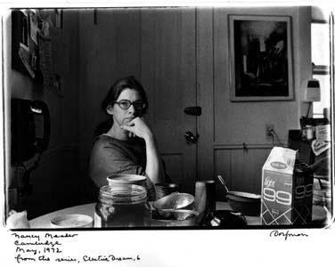
Every couple of months, Nancy and Abbott Meader come down from Oakland, Maine, to buy food at the Haymarket, to go to the Museum of Fine Arts or the Gardner Museum. We have a regular procedure: Nancy brings supper, usually something she has frozen from her garden, like zucchini, or eggplant, a lasagna, or something very special like rosemary chicken. We have nibblies: beer nuts, peanuts, pickles from the garden, sesame butter. Abbott makes a bacon breakfast.
I met Nancy in Paris when we both took our junior year abroad, she from the University of Michigan. We roomed together for a few weeks, until she met Abbott -- he'd won a grant from Dartmouth to go to Europe to paint. Much later, after the birth of her first child when she was twenty-five, Nancy started to make pots, Now she is one of the best potters in New England; the vase on the table and the coffee mugs in the kitchen photographs are hers. Most of the paintings in the kitchen and living room are by Abbott. For twelve years, until June 1974, he taught at Colby College; he gave it up to see if he and Nancy can support their family totally on their work.
It's important to me to have close friends like Nancy and Abbott with
whom I can discuss the ins and outs of marginal living, discuss the problems
of putting the last dollar on materials or equipment. It takes a sort of
courage and daring -- at least the conviction/assumption that nothing drastic
or awful will happen in the next month or two. And then there are the questions
about getting the work done, the energy drain of teaching, putting together
a body of work, making it, getting grants, endless subjects to work over.
The vocabulary is there for us.
{kind=link}
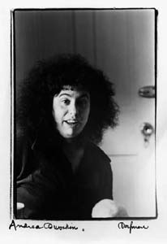
Andrea Dworkin, a new friend. We are on a program together at Smith College, April 1974. It is the first time either of us has made the big-time college lecture scene and we are high from the guest star treatment. The women give Andrea a standing ovation when she finishes reading the prose piece she'd written for the occasion.
We get through at midnight; there's nothing to do in Northampton, no place to go for coffee and talk. No place to celebrate. So she drives with me back to Boston. We have a marvelous breakfast; Ilene comes over, and so does Charlotte Ibetz, Creeley's daughter. I take a whole roll of film, but in my excitement misload the camera. After all these years! 'A moment not meant to be preserved, just enjoyed,' I tell them. This is one of three images that came out.
{kind=link}
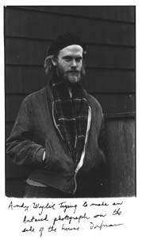
Andy and Christina Wylie moved into the other half of the house, 21 Flagg Street, in 1970. The three of us had been friends for a long time, since Andy's freshman year at Harvard. Christina was pregnant and in August 1970 Nicholas was born. Andy, who has this demonic energy, would weed the backyard every couple of weeks, tearing up the brick patches altogether, rather than just pull up the weeds growing in the cracks. Then he would lay down a brand-new brick design. I would watch him from my kitchen window, going like a dervish. We often ate meals together, drank wine in the evening, played with Nicholas, talked about politics, CIA agents, and drug laws.
Andy and I had a theory that the custodian Harvard had hired to look after Flagg Street real estate was an informant for the CIA. He would come into our houses, allegedly to check for drippy faucets, look in every room to size the place up, and ask us ingenuously if we knew where he could get some dope. As if we'd fall far such a stupid set-up. He didn't even bother to carry a wrench. When something really needed to be repaired, he brought his helper who did the actual work.
I took the picture of Andy with a purpose. He had been reading Artaud and was convinced I could take an 'Artaud spirit' photograph of him. I didn't know what he was talking about, but we went to the side of the house and he went through twenty poses. On the roof of my car, on the top of the shed where the garbage barrels are kept, against the garage.
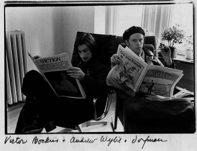 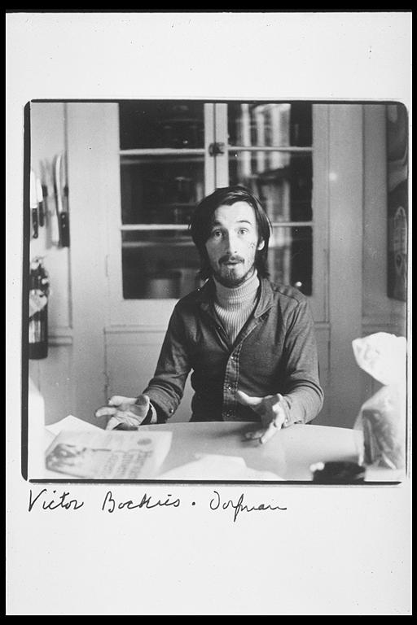
{kind=link}
{kind=link}
Victor Bockris is a friend of Andy Wylie's and like Andy is highly energetic and possessed. For a while, he and Andy wrote as a team, Wylie-Bockris, specializing in interviews with Mohammed Ali, Salvador Dali, Holly Woodlawn, et al.
Next: Children
Find Elsa's Books


Please change your links and bookmarks to elsadorfman.com!
Elsa thanks her cybergodmother, photo.net, her longtime, most generous host at furfly.com, and her current web host Mike Sisk at TCP/IP Ranch, LLC.
Copyright 1970-2010 © Elsa Dorfman.
Inquiries for the use of Elsa's content are welcomed!
Please
read these guidelines.
Contact
Elsa Dorfman via email or send Website Feedback to her webmaster.